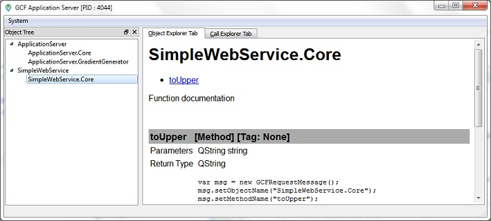

Please ensure that GCFApplicationServer is running and that the SimpleWebService.Core object is listed as an available object in the application server
Enter some text in the text-box below and click on the "To Upper" button to issue a call to the toUpper() service method in SimpleWebService.Core. Upon recepit of the response, the result is show in the result box below. This web-application also shows the request XML message sent and the response XML message received.
Enter some text here:Request XML Message